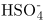
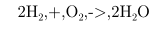
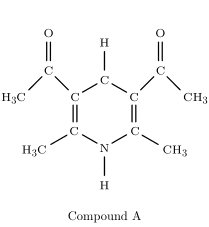
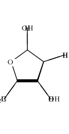
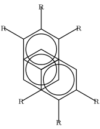
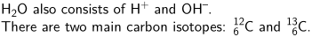

ConTeXt always came with extensive chemistry support including drawing of chemical structures and the typesetting of reactions. In MkII this was called PPCHTeX, which works also with plain TeX and LaTeX.


Some other links about chemistry in ConTeXt:
- publications manual – use the bibliography database for chemicals
- Chromatograms with MetaPost
- ChemML ( screen ), MathML extension for chemistry.
Using \chemical
This is the built-in version of the previous chemic module.
-
\chemical{HSO_4^{-}}
- 
You can also typeset chemical reactions:
-
\startformula \chemical{2H_2,+,O_2,->,2H_2O} \stopformula
- 
Chemical structures
-
\startchemical [scale=medium, width=fit, top=3000, bottom=3000] \chemical [SIX,SB2356,DB14,Z2346,SR3,RZ3,SR6,-RZ6,+RZ6] [C,N,C,C,H,H] \chemical [PB:Z1,ONE,Z0,MOV8,Z0,SB24,DB7,Z27,PE] [C,C,CH_3,O] \chemical [PB:Z5,ONE,Z0,MOV6,Z0,SB24,DB7,Z47,PE] [C,C,H_3C,O] \chemical [SR24,RZ24] [CH_3,H_3C] \bottext{Compound A} \stopchemical
- 
(The “good” images are old; the broken ones are the result of the current code.)
-
\startchemical [scale=medium, width=fit, top=3000, bottom=3000] \chemical [FIVE,FRONT,BB125,+SB3,-SB4,Z4] [O] \chemical [FIVE,FRONT,+R1235,+RZ1235] [H,H,\SR{HOH_2C},OH] \chemical [FIVE,FRONT,-R1235,-RZ1235] [H,OH,H,H] \stopchemical
- 
{kind=link}
-
\setupchemical[width=fit] \startchemical \chemical[SIX,B,C,MOV2,B,C,R234,RZ234,MOV5,MOV6,B,C,R561,RZ561] [R,R,R,R,R,R] \stopchemical
- 
{kind=link}
To draw this structure horizontally:
-
\setupchemical[width=fit] \def\RotR{\rotate[rotation=270]{\ix R}} \rotate[rotation=90]{ \startchemical \chemical[SIX,B,C,MOV2,B,C,R234,RZ234,MOV5,MOV6,B,C,R561,RZ561] [\RotR,\RotR,\RotR,\RotR,\RotR,\RotR] \stopchemical }
-

{kind=link}
An example of an amino acid: Histidine (Ace-His-Nme). The rest of the amino acids are shown in TT4Sci
-
\definechemical[radical] {\chemical[SAVE,ONE,SB768,Z068][C,H,H] \chemical[MOV7,ONE,Z0][C] \chemical[MOV7,FIVE,ROT4,SB12345,EB42,Z1235,SR125,RZ125,RESTORE][N,C,N,C,H,H,H]} \startchemical [scale=big,size=big,left=2600,right=4200,bottom=2800,top=4500] \bottext{Histidine} \chemical[SIX,SB23] \chemical[PB:Z1,SAVE,radical,RESTORE,PE] \chemical[PB:Z2,ONE,SB37,Z03,PE][\SL{C^{\alpha}},H^{\alpha 1}] \chemical[PB:Z3,SIX,Z5,SB4,Z4,PE][N,H] {\color{blue} \chemical[PB:Z4,SIX,Z2,SB2,DB1,Z31,PE][C{\text{\tiny{-1}}},\SR{H_3C},O{\text{\tiny{-1}}}]} \chemical[SIX,MOV1,SB23] \chemical[PB:Z3,SIX,Z5,DB4,Z4,PE][C,O] {\color{red} \chemical[PB:Z2,SIX,Z4,SB34,Z53,PE][N{\text{\tiny{+1}}},H{\text{\tiny{+1}}},\SL{CH_3}]} \stopchemical
-

{kind=link}
Simple Formulae in Text Mode
An alternative to using the chemistry module or mathmode for typesetting simple formulae are the ConTeXt commands \high, \low, \lohi, and \himilo. This might be useful if you want to typset the formula with the same font as the surrounding text (in titles or slanted fonts, although that might not be desired in all situations).
-
\ss H\low{2}O also consists of H\high{+} and OH\high{--}.\crlf There are two main carbon isotopes: \lohi{6}{12}C and \lohi[left]{6}{13}C.
- 
Taco’s macros implement this approach [1]:
This is broken code from 2006!
-
\newbox\chemlowbox \def\chemlow#1% {\setbox\chemlowbox\hbox{{\switchtobodyfont[small]#1}}} \def\chemhigh#1% {\ifvoid\chemlowbox \high{{\switchtobodyfont[small]#1}}% \else \/\lohi{\box\chemlowbox}{{\switchtobodyfont[small]#1}}\fi } \def\finishchem% {\ifvoid\chemlowbox \else \iffluor \fluorfalse \kern-.1em \fi\low{\box\chemlowbox}\fi} % for "kerning" after F \newif\iffluor \unexpanded\def\molecule% {\bgroup \catcode`\_=\active \uccode`\~=`\_ \uppercase{\let~\chemlow}% \catcode`\^=\active \uccode`\~=`\^ \uppercase{\let~\chemhigh}% \dostepwiserecurse {65}{90}{1} {\catcode \recurselevel = \active \uccode`\~=\recurselevel \uppercase{\edef~{\noexpand\finishchem \rawcharacter{\recurselevel}}}}% \uccode `\~=`\F \uppercase{\def~{\finishchem F\fluortrue}}% \catcode`\-=\active \uccode`\~=`\- \uppercase{\def~{--}}% \loggingall \domolecule }% \def\domolecule#1% {\expandafter\scantokens\expandafter {\detokenize{#1\finishchem}}\egroup} \bs Bold slanted molecules: \molecule{HSO_4^-} and \molecule{SF_6}
-

The main difference with the built-in chemistry is that the \molecule from this example uses the same font as the one in surrounding text, while the official module always uses the (mostly roman) math font (which is probably the proper way if you’re writing dozens of formulas).
Alternatively you can setup the style parameter used for chemical formulas manually:
\setupchemical[style=\bs]
Old Links
- PPCHTeX FAQ (1997)
- TUG Boat article on PPCHTeX by Hans Hagen and A.F. Otten 1996
- ChemML (MathML extension for chemistry) by Pragma